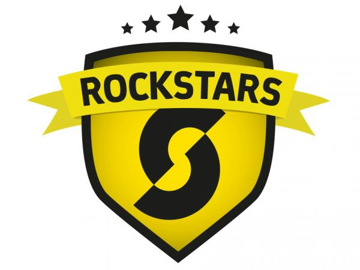
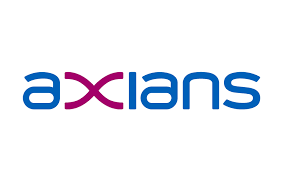
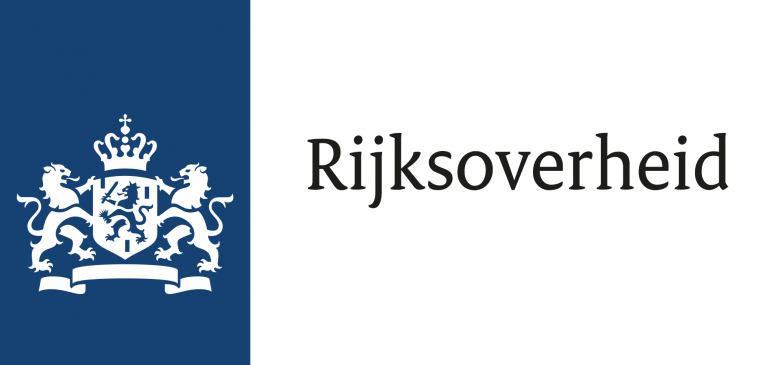
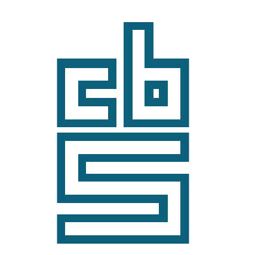
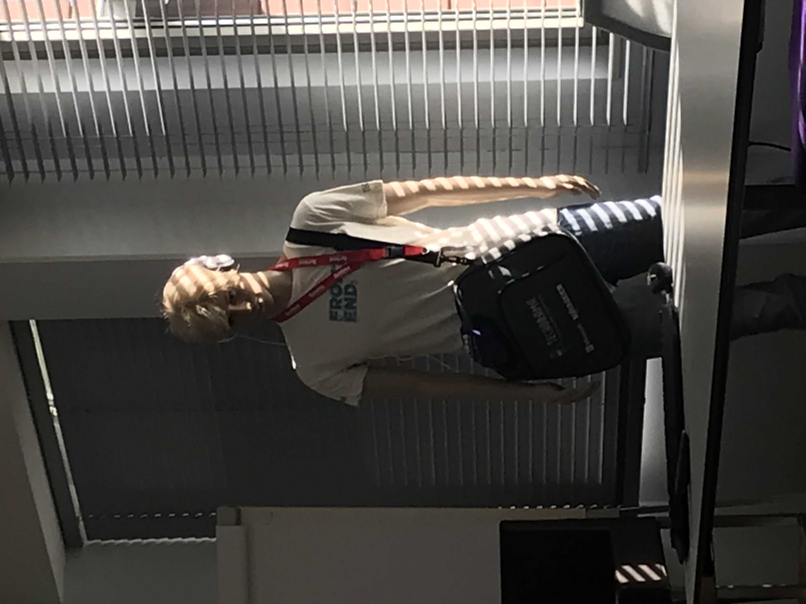
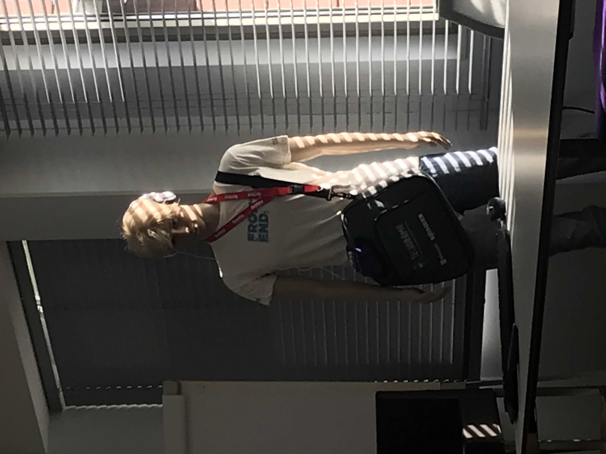
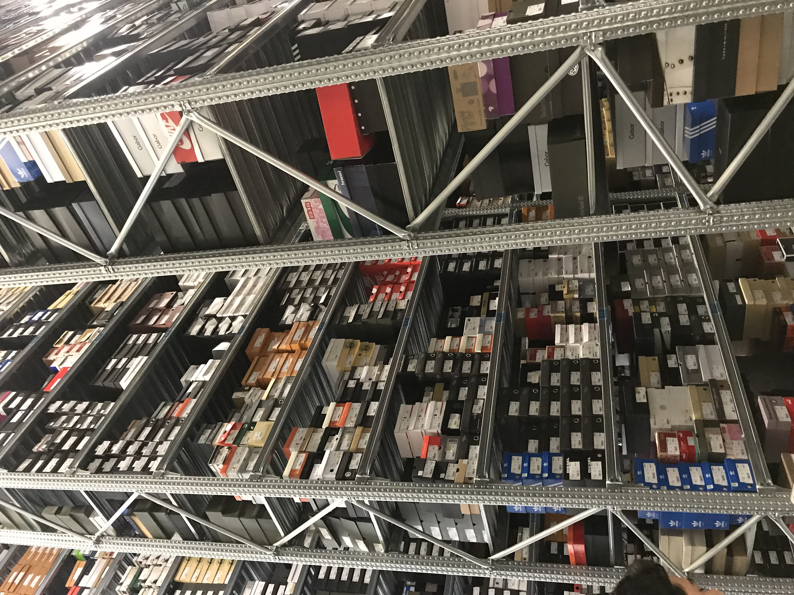
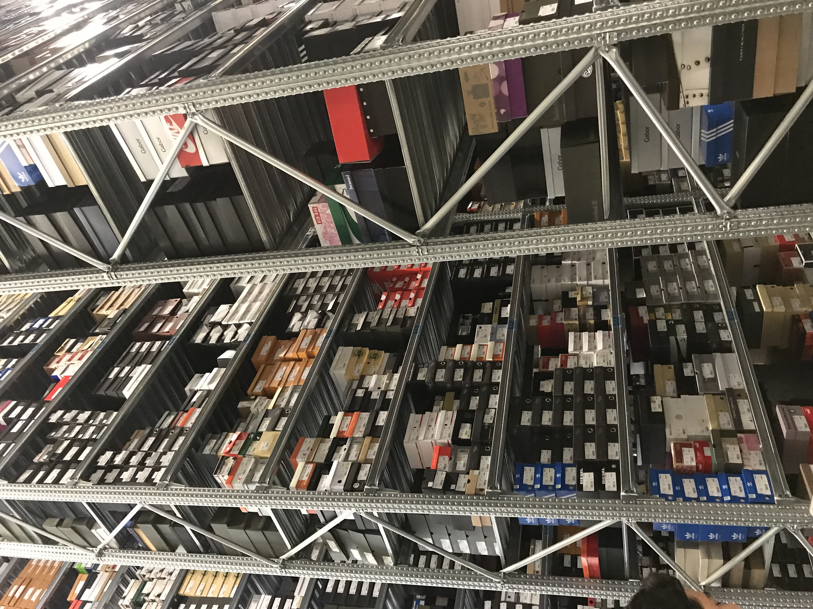

RockStars IT
Rockstars it is een detachering/agency die onder andere studenten helpt met het zoeken naar een stageplek ook hebben ze bij baantjes voor beginnende icters. Veel voorkomende functies binnen het bedrijf zijn ontwikkeling, detachering, events, carriere-manager en persoonlijke begeleider. Dit doen ze doormiddel van een aantal partners zoals: microsoft, ibm en gdg. Het speciale van rockstars it is dat zij vanuit de student naar een stageplek zoeken. Als een student naar rockstars gaat voor een stageplek dan wordt er eerst gekeken naar intresses en naar kunnen, dan gaar rockstars kijken naar wat voor mogelijkheden er zijn.
Axians
Axians is een bedrijf dat zich bevindt op het gebied van Informatie en Communicatie Technologie; schaalbaar, flexibel en duurzaam. Ze kijken samen met de klant naar oplossingen voor problemen op het gebied van ict dit kan doormiddel van software zijn maar ook doormiddel van analyses te doen. Het bedrijf kent dus veel verschillende kanten van de ict en dus ook veel verschillende functies zoals: buisiness intelligence consultant , data scienties, netwerk engineer, programmeur en business consultant. Sommige van de functies hebben veel met programeren te maken maar functies zoals: buisiness intelligence consultant en buisiness consultant, zijn eigenlijk iets heel anders maar hebben toch veel met ict te maken. Technieken die Axians gebruikt zijn: Python, MariaDB,sequalerver,java en csharp voor het plannen van alle ondernemingen gebruiken ze vaak SCRUM. 
Rijksoverheid
De Rijksoverheid is een bedrijf dat zich veel met ict bezighoudt, het is dan ook zeer breed op het ict gebied het varieert van het programeren, cyber security tot aan data anayliseren, een aantal functies die er zijn: rijksmedewerker, projectmanager, programmadirecteur,programmamanager en eigenlijk alles wat onder ict & techniek valt zoals programmeur en ict medewerker. De technieken die zie hiervoor gebruiken varieren dan ook weer van programmeer talen tot aan scrum voor de planning. 
IT Talent
It talent is een detacheringsbedrijf dat onderdeel is van memory group, het bedrijf brengt werkgevers
en
studenten samen doormiddel van evenmenten. Belangerijke functies zij markting, finance,sales,
events,publications en groepsfotografie. Om werkgevers en studenten samen te brengen maakt it talent
gebruik van talent games een soort talentenjacht, match&meet-evenmenten en doormiddel van hun eigen
vacaturebank genaamd Jobnet.
.png)
CBS
Het CBS is een statisctisch bureau die alles te maken hebben met statistieken op alle gebieden, ict komt hier voor om bijvoorbeeld software te schrijven voor de statistieken maar ook data-analisten zijn veel voorkomend een aantal andere functies zijn: cross-platform-appontwikkelaar, statistch onderzoeker,redacteur en software-architect veel gebruikte technieken zijn: veel programeertalen om de software te kunnen schrijven maar ook voor cyber security. 

 

.jpg) 
